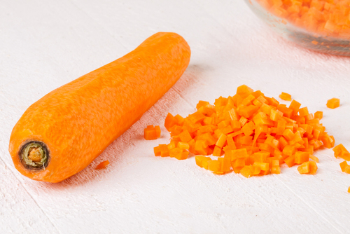
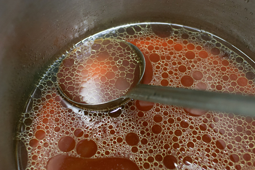

Task 2: Preparation and Production
Click 'NEXT' to start.
Click 'NEXT' to start.
The correct preparation and storage of stocks, soups and sauces is vital to the quality of the final dish.
Whilst preparation methods will vary according to what is being made, the following points should be noted:
The preparation process of all types of stock is the same. It is the ingredients and cooking time that differ depending on the stock.
White stocks use:
Brown stocks use:
Fish stocks use:
The most important principle when preparing any soup is to begin with a high quality stock.
Soups are then enhanced by the addition of other flavours and ingredients. It is key that the additional ingredients are weighed and measured correctly, ensuring the final product meets the dish requirements.
Preparation methods for soups differ depending on the type of soup.
Clear soups
|  |  |
Thickened soups
Miscellaneous soups
These are soups that do not fall into other categories an have their own particular preparation methods. These include cold soups and regional varieties.
For example, gazpacho is prepared using finely chopped vegetables and using tomato juice as the stock, regional varieties also serve this blended with the addition of chopped tomato, pepper and cucumber.
Different sauces will require different methods for preparation:
All miscellaneous sauces will have their own preparation methods which must be followed.
The storage of prepared ingredients for stocks, soups and sauces is vital for the safety of your customer. Food safety and hygiene regulations must be complied with at all times. Always consider the following points:
All stocks, soups and sauces should ideally be used fresh daily. Otherwise:
When labelling any stocks, soups and sauces, the following information should be included:
| Product: |
| Date: |
| Use by: |
When storing any stocks, soups and sauces you must always consider the possibility of cross-contamination. All stocks, soups and sauces not for immediate use should be:
The production of quality stocks, soups and sauces will be achieved through using the correct procedures and using only quality ingredients.
Production methods will vary according to the stock, soups or sauce that is being made. However to achieve the best outcome the chef must:
Cooking times for stocks vary depending on the size of the bones used and the intensity of the stock required.
| Stock | Time |
|---|---|
| Fish | Approximately 30 minutes |
| Vegetable | 1 hour |
| White | Up to 8 hours |
| Chicken | Up to 12 hours |
| Brown | 8 hours + |
Brown stocks are also made from bones and aromatics but these are browned first to enhance the flavour and colour of the resulting stock.
Brown stocks are cooked longer than white stocks to extract more flavour. It is important to chop the bones into small pieces to maximise surface area and optimise the flavour.
Fish stocks are used to make soups and sauces, including prawn bisque, fish velouté and white wine sauce. The traditional method to make a fish stock is:
The following are characteristics of a good quality stock:
Cooking techniques will vary to the type of soup that is being made, below are some of these techniques used today:
Consommé
Cream soup
These types of soups are made from a stock and a roux or a purée. The soup is traditionally cooked and then liquidised. The soup is then finished by adding cream and garnished with herbs or with some of the base ingredient, such as julienne of chicken for cream of chicken soup.
Broth
This is a clear soup of bones, meat and vegetables. Once the meat is tender it is removed and cut for garnish. The vegetables are generally cut the same size using a paysanne shape. The soup is then skimmed and served using the meat as the garnish.
Purée soup
This type of soup is made of a vegetable base which has been blended and the consistency altered using stock or cream. The soup is finished with a cut of the base flavour and croutons.
Bisque
A bisque is a very rich creamy soup usually made from lobster or other shellfish. The soup is roux-based and cream is added at the end to improve the consistency and finish the soup.
Velouté
A velouté is made with stock and finished with a liaison of egg yolks. This allows the soup to have creamy texture and rich flavour. A typical chicken velouté will be finished by passing it through a strainer and garnishing it with julienne of chicken breast and chopped parsley.
There are a variety of sauces available to the chef in the modern kitchen, both hot and cold. The techniques employed in their production and finishing are varied and wide. Some examples of the types of sauces are:
Béchamel is a basic white sauce using flour, butter and milk. It is made using the following method:
| Basic ingredients | Method |
|---|---|
|
|
The finishing method is to strain the sauce and add diced butter to prevent a skin forming. Some derivatives include:
Brown sauce, also known as espagnole, is a combination of brown stock and brown roux. In today’s modern kitchen a reduced veal stock is used to remove the need for flour.
This sauce is produced by creating a brown roux and adding brown stock to it. The thickened sauce is then strained and used as a base for many derivatives such as:
Purée sauces can either be fruit- or vegetable-based, such as apple or butternut squash purées.
These sauces will be produced and finished dependant on what is required of the final sauce. Some examples:
The common term used in English cooking is gravy, although traditional gravy was thickened with flour, whereas jus is thickened by reduction.
The juices of the meat form a sediment on the bottom of the roasting pan. The unwanted fat is removed (de-greased) then the sediment is released (de-glazed) with stock or wine. The bones and mirepoix are simmered slowly for approximately one hour.
The resulting juices should be very clear and have an excellent flavour of the meat item used.
A velouté is a white sauce, velvety in texture and is made from a blond roux and white stock. The basic method to produce a velouté is as follows:
| Basic ingredients | Method |
|---|---|
|
|
Some of the derivatives of a veloute are:
A mayonnaise is a good example of a cold emulsion sauce. The basic ingredients and preparation method is:
| Basic ingredients | Method |
|---|---|
|
The basic ratio for these ingredients is 8 yolks to 1 litre of oil.
Whisk the yolks with the mustard and vinegar and then incorporate the fat slowly. The sauce can be finished with a small amount of boiling water to stabilise it more. The oil used will provide the underlying flavour. Traditionally olive oil is used. |
Some of derivatives of a mayonnaise include:
All sauces should have the following quality characteristics:
When making any sauces, only quality ingredients should be used and care should be taken not to over-season.
As a chef you will need to understand the flavours that will enhance your dishes for the customers. Some examples include:
You have now reached the end of this unit and are ready to progress to the media content or quiz. You can do this by clicking on the tabs below. Remember that you can revisit this unit to revise at any time.